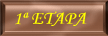

|
|||
 |
 |
||
|  | |||
|
|||
3ª ETAPA PALAS DE REI – ARZUA (28 Km.) 22 DE JUNIO/2.005
SALIMOS A LA HORA ACORDADA (a las 6,30 de la mañana), EMPEZAMOS SIN DESAYUNAR PREVIAMENTE, DECIDIMOS HACERLO DURANTE EL CAMINO.
CRUZAMOS LAS DOS CALLES DEL PUEBLO Y YÁ ESTABAMOS FUERA DE ÉL
(de momento vamos cuesta abajo).
VAMOS BROMEANDO POR EL CAMINO CON OTROS PEREGRINOS, NOS DAMOS CUENTA QUE EL INGLÉS ES MUY IMPORTANTE Y QUE REALMENTE NO SABEMOS NI PAPA, SE ABREN FRONDOSOS SENDEROS POR EL CAMINO EL PAISAJE ES BELLO.


PARAMOS EN ALBERGUE CASA DOMINGO DONDE NOS HICIMOS FOTOS Y DESAYUNAMOS DE LO LINDO, DEJAMOS UN MENSAJE DE NUESTRA ESTANCIA EN ESE LUGAR.


SOBRE LAS 10,30 LLEGAMOS AL FAMOSO PUENTE ROMANO QUE INDICA QUE ESTAMOS LLEGANDO A MELIDE UNA PRECIOSA LOCALIDAD.

CRUZAMOS MELIDE, YÁ LLEVAMOS UNAS 4 HORAS CAMINANDO, TODAVÍA QUEDA UN POCO MENOS DE LA MITAD, PERO SEGÚN VA TRANSCURRIENDO LA ETAPA SE CONVIERTE EN ROMPEPIERNAS, CONSTANTES SUBIDAS Y BAJADAS MUY PRONUNCIADAS, EL SOL ES ABRAZADOR.
EL GRUPO SE RESIENTE, SE ESTIRA UN POCO, EL AGUA SE ACABA, ESTAMOS SEDIENTOS Y DESPUÉS DE PASAR POR MELIDE NO APARACE NINGUN BAR NI NADA, ALGUNAS RECTAS NOS INDICAN LO QUE LLEVAMOS RECORRIDO Y LO QUE QUEDA POR RECORRER, SACAMOS FUERZAS DE FLAQUEZA Y DESPUÉS DE MUCHOS KM. ENCONTRAMOS UN BAR DONDE NOS PARAMOS A BEBER Y REPONER FUERZAS, EL GRUPO SE UNE OTRA VEZ (EN LA CARA SE NOS NOTA DE QUE LA ETAPA ESTÁ SIENDO LARGA DE COJONES) Y TODAVÍA QUEDABAN ALGUNOS KM. PARA LLEGAR A ARZUA, LAS CUESTAS Y BAJADAS QUE NOS ENCONTRAMOS A CONTINUACIÓN, HICIERON MELLA, EL GRUPO SE DIVIDE OTRA VEZ, PARECE QUE NÓ LLEGAMOS NUNCA, TRAS UNA PRONUNCIADA PENDIENTE CAEMOS EN EL ALBERGUE DE RIBADIXO, QUEDA TODAVIA UNOS 3 KM. PARA ARZUA, EL ALBERGUE ES PRECIOSO ESTÁ EN LA ORILLA DE UN RIACHUELO, LA TENTACIÓN NOS HACE PREGUNTAR SI HAY CAMAS LIBRES, NOS DIJERON QUE SÍ, PERO BARES NO HABÍA A SUS ALREDEDORES, HABIA QUE SUBIR LA CUESTA Y A UN KM. APROX. BUENO LOS BARES PARA NOSOTROS ERA UNA COSA MUY IMPORTANTE Y ESTANDO TAN LEJOS DECIDIMOS CONTINUAR HASTA ARZUA, QUIZÁS LA DECISIÓN FUÉ POR LO CANSADOS QUE ESTÁBAMOS Y SUBIR LA CUESTA QUE ACABABAMOS DE BAJAR NOS CORTABA EL ROLLO, . LOS 3 KM. QUE RESTABAN NOS PARECIERON 6, LLEGAMOS EXHAUSTOS, PREGUNTAMOS Y EL ALBERGUE ESTABA COMPLETO COMO YA IMAGINABAMOS DE ANTEMANO, Y CLARO DESPUES DE ÉSTAS TRES DURAS ETAPAS Y PRÁCTICAMENTE A MITAD DE CAMINO ESTABA CLARO QUE LO MEJOR QUE PODIAMOS HACER ES TENER UN MERECIDO DESCANSO EN UN HOSTAL.
EN EL MISMO ALBERGUE NOS RECOMIENDAN UN HOSTAL, AL CUAL LLAMAMOS E INCLUSO SE PRESTABAN A RECOGERNOS YA QUE ESTABA A UNOS 750 MTS. A ESTAS ALTURAS ERA UNA DISTANCIA CONSIDERABLE.
SE PRESENTA UNA FURGONETA Y EL CONDUCTOR ERA PÁ VERLO, BUENO Y CUANDO HABLÓ, NÓ NOS REIMOS POR EDUCACIÓN, ERA UN POCO TARTA, CON MEDIA LENGUA, SE PRESENTA Y NOS DICE QUE SE LLAMA “SANTI” Y QUE NOS IBA A EXPLICAR LAS COSAS “MU FACIL” AHÍ SÍ NOS TRONCHAMOS
IBA CONDUCIENDO VELOZMENTE SERÍA PARA QUE PARECIERA QUE EL HOSTAL ESTABA CERCA DEL PUEBLO, ACOJONADOS LLEGAMOS AL HOSTAL, DUCHA DE RIGOR Y NOS FUIMOS A ALMORZAR, LAS PAPAS GUISADAS, PEDAZO DE PLATO QUE NOS PUSIERON, NUESTRA ENSALAITA ETC. ETC. PERO OJÚ COMO ESTABA EL TINTO QUE NOS PUSO EL COLEGA, NO SÉ SI FUERON DOS O TRES JARRAS PERO QUE MARAVILLA DE TINTO.
EN ÉSTE MISMO HOSTAL QUE EN LA PARTE BAJA, ERA ALBERGUE DE PEREGRINOS, COINCIDIMOS CON NUESTRAS AMIGAS DE MALLORCA, ESTUVIMOS CHARLANDO CON ELLAS, UN POCO MAS TARDE FUIMOS OTRA VEZ AL BAR DEL COLEGA, CALAMARES, DORADAS, ETC. Y SOBRE TODO EL TINTO.
SALIENDO DE ARZUA

CONTINÚA EN EL APARTADO 4ª ETAPA.
(CUALQUIER COMENTARIO SOBRE ESTA ETAPA NO DUDES EN ESCRIBIRME) PULSA SOBRE EL BUZON.